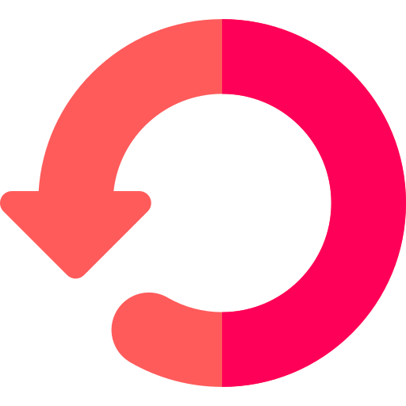

MyHistory
⌛
Aucune visite trouvée.
Modifie la recherche ou élargis la période.
Fin de l'historique — vous voilà au début des temps. 🏁

Aucune visite trouvée.
Modifie la recherche ou élargis la période.
Fin de l'historique — vous voilà au début des temps. 🏁